This demo should take about 6 minutes.
Show how DevOps can be used to improve the development, build and test deployment of an application.
Hyper-V enabled PC. Required for the Visual Studio UWP and Visual Studio Android emulators.
Internet connection is required in order to setup and run the demos.
You will need Visual Studio 2015 or Community edition with Update 3
To download Visual Studio 2015 Community edition, https://www.visualstudio.com/vs/mobile-app-development/
Visual Studio Android emulator: https://www.visualstudio.com/vs/msft-android-emulator/
If you encounter issues with connecting Visual Studio debugger with the Visual Studio I would recommend following the steps from this blog article: http://dotnetbyexample.blogspot.ca/2016/02/fix-for-could-not-connect-to-debugger.html
This demo uses Xamarin Test Cloud. Using test cloud is optional. If you want to use it go to this url: https://testcloud.xamarin.com/register . You will need a work email account.
Get the Android emulator running ahead of the demo. Use the link above to install the Visual Studio Android emulator if you don’t have it already.
In Visual Studio, under the Tools menu options (1). Select the Visual Studio Emulator for Android option (2).
Select the Android device profile 5”KitKat (4.4) XXHDPI Phone (1). Click the Run green button (2). Click the Close button (3).
Register for a free Visual Studio Online (VSTS) account at https://www.visualstudio.com/vso/.
Click on the ‘Get started for free’ button (1).
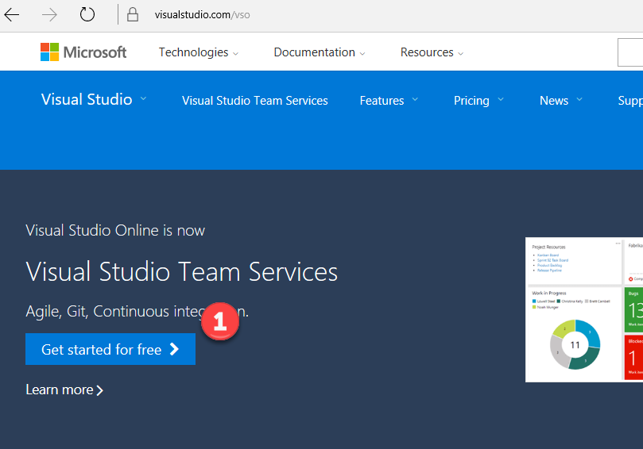
Login into your VSTS account.
At the home screen located the New project hyperlink button
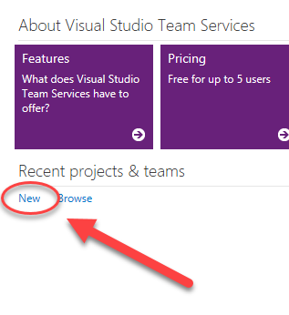
Enter the Project name GPSImageTag (1). Click on the ‘Create project’ button to finish (2).
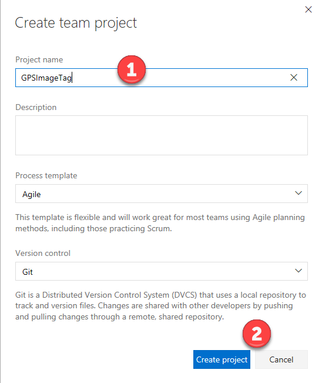
Wait until VSTS creates the project. Once it’s done, click on the ‘Navigate to project’ button (1).
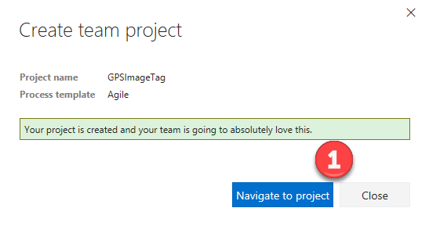
Click on the ‘Add code’ button to continue (1).
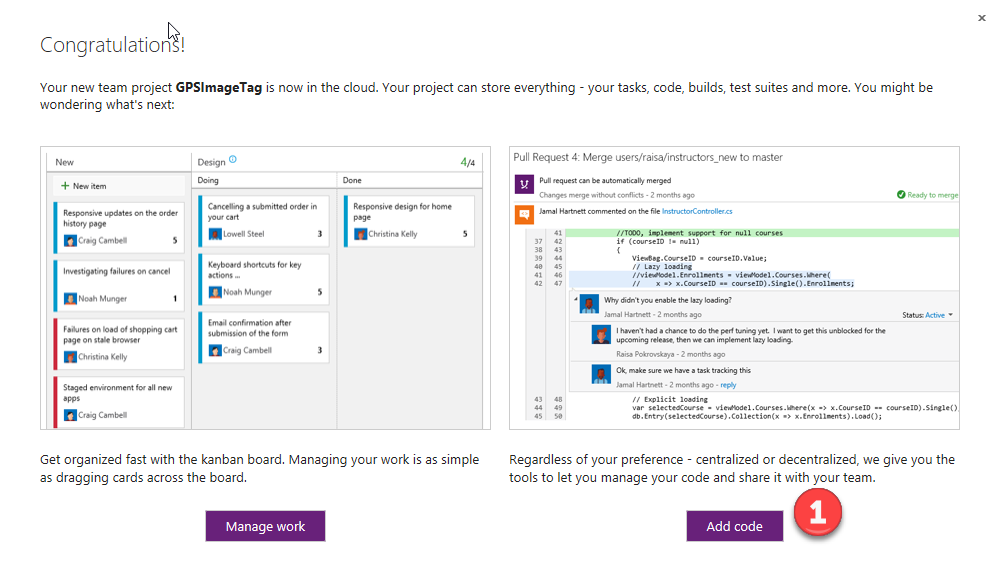
For this step we need to setup the Git repo on the demo workstation. Click on the ‘Clone in Visual Studio’ button (1).
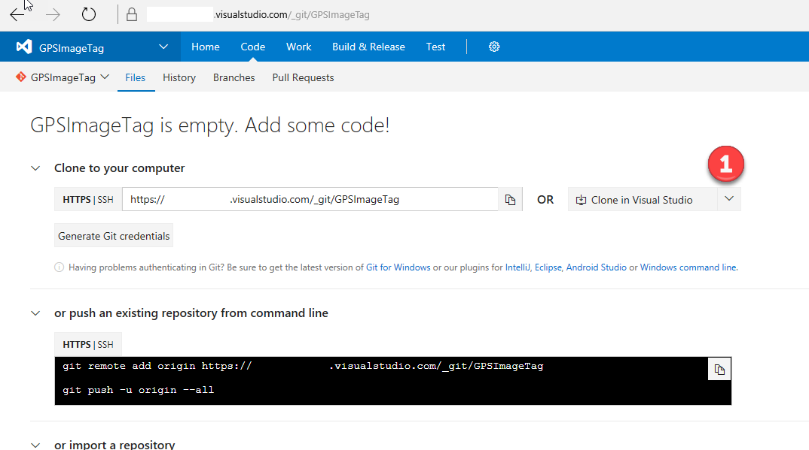
Allow the VSTS web operation to open Visual Studio by clicking on the ‘Yes’ button (1).
This will load up Visual Studio on the demo workstation. We need to setup the local location for the project Git repo. For this example I’ve used ‘C:\Users\DevUser\Documents\Session 3\Demo 3.5\src\Start’ (1). Once you’ve satisfied with the repo location click the ‘Clone’ button (1).
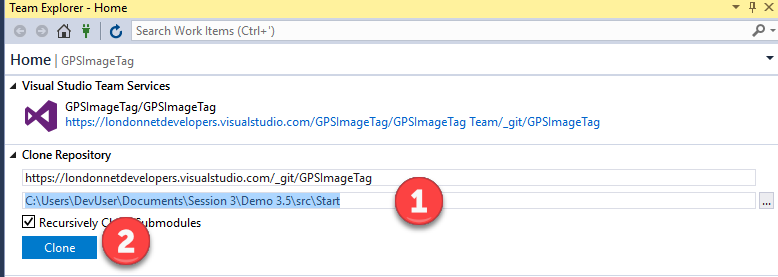
Locate the Demo3.4.zip file in the Solutions folder with this content, extract it to a new folder under your Documents folder.
We need to copy the completed 3.4 demo solution to the cloned repo folder. We need to copy the GPSImageTag folder found in the Demo3.4\Complete folder. In this example I would copy the GPSImageTag into C:\Users\DevUser\Documents\Session 3\Demo 3.5\src\Start
Next we need to open the new copy of the solution in Visual Studio using File->Open->Project/Solution.
Open the properties for the Xamarin.Forms GSPImageTag.DroidNative project. Select the Android Options (1). In the Packaging properties make sure that ‘Use Shared Runtime’ and ‘Use Fast Deployment’ are disabled (2).
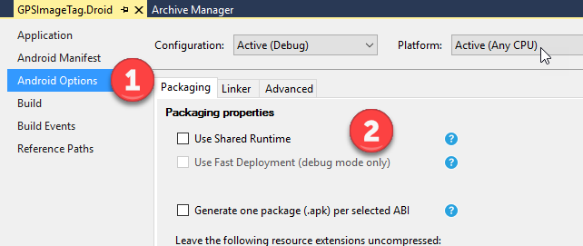
We need to create a temporary Android certificate for the Xamarin.Forms Android head. In the Solution panel select the GPSImageTag.Droid project. Bring up the dialog menu and select the Archive option (1).
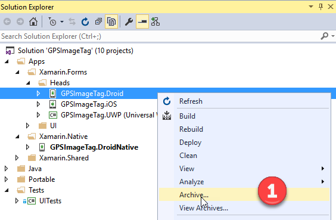
The Archive step will build Android apk file. Next we to need to click the ‘Distribute’ button.
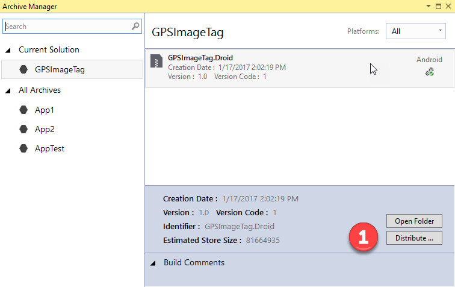
Next, we to click on the ‘Ad Hoc’ button.
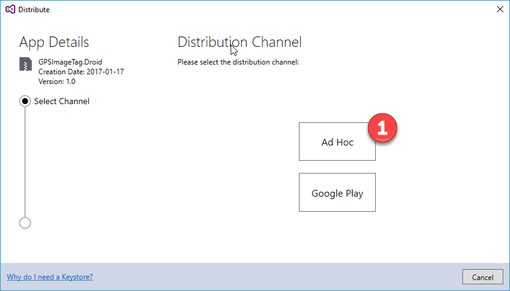
Next we need to create the temporary Android Keystore file. Click on the plus button to continue.
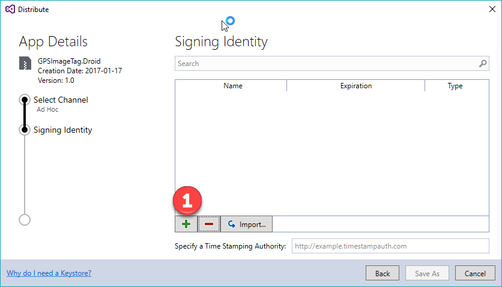
Next we need to enter the Alias, Password and Full Name as the minimal information for the Android KeyStore file (1). Next, click the ‘Create’ button (2). You need to remember this password for later setup steps.
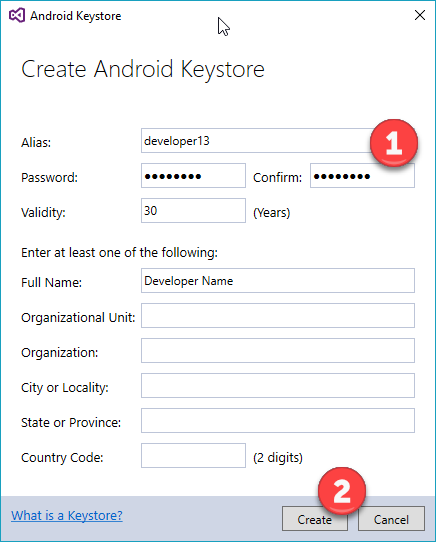
Once the Android KeyStore file is created we need to add it to the Xamarin.Forms Android Project. Double click on the KeyStore line (1).
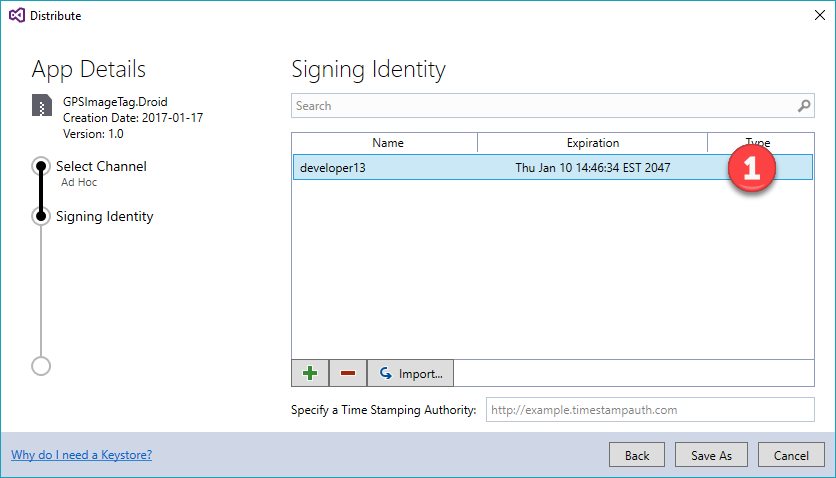
The KeyStore path can be found on the first line (1) – We need this for an upcoming step. Click on the Cancel button.
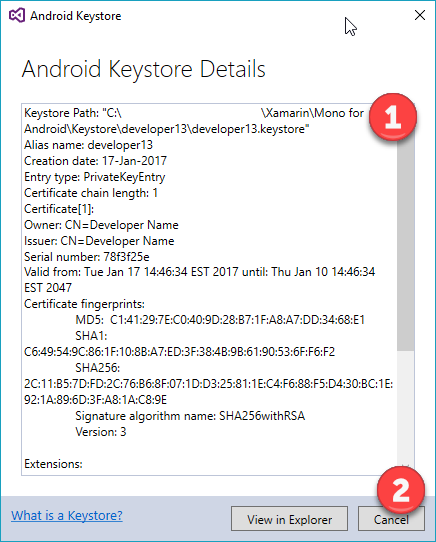
Select the GPSImageTag.Droid project (1). Bring up the popup menu and select Add (2). Then click Existing Item (3).
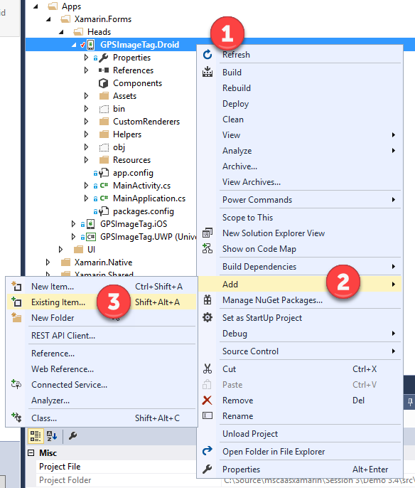
Use the path for the KeyStore from just a moment about - add to the GPSImageTag.Droid project.
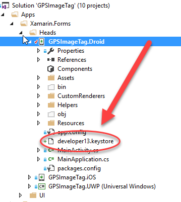
In Visual Studio we need to open the Team Explorer panel (1). Then click on the ‘Changes’ button (2).
Before we can commit the project code we need to enter our Git User information. Enter both your name and email address (1). Finally click the ‘Save’ button (2).
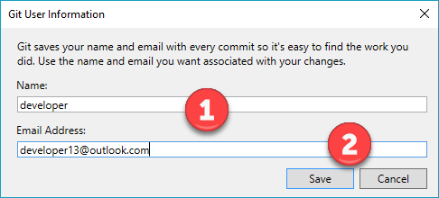
Next, we need to enter a comment for the code commit (1). Then press the ‘Commit All’ button to continue.
After we have committed the code to the local Git repo we need to update the VSTS project repo. To do this we just need to click on the Sync url link (1).
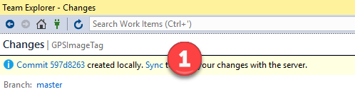
Now we need to Push up our committed changes from the local repo to the VSTS project repo. We can do this by clicking the ‘Push’ url link.
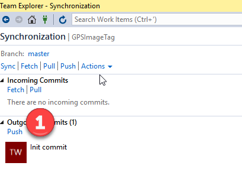
To check to see if the GPSImageTag has been published to the VSTS project click on ‘Code’ (1). Next, verify that the code is present in the repo (2).
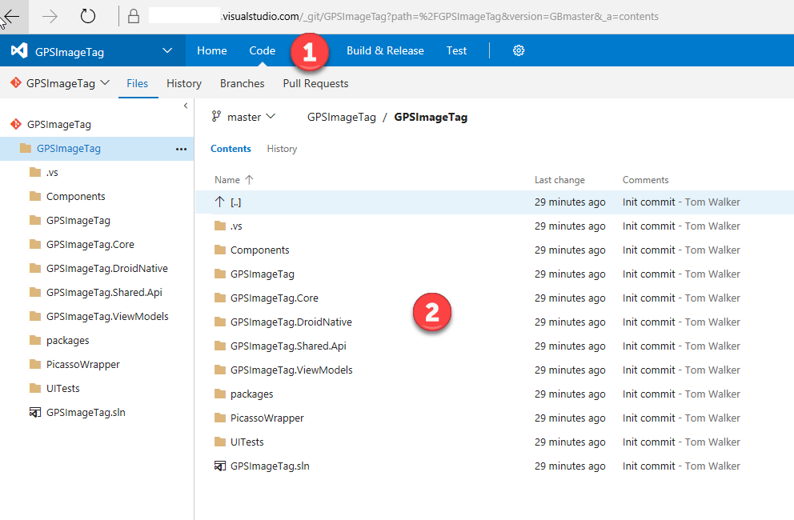
Now we are ready to setup the Build Definition for the GPSImageTag repo. First, click on the ‘Build & Release’ url (1). Then click on the ‘New definition’ button (2).
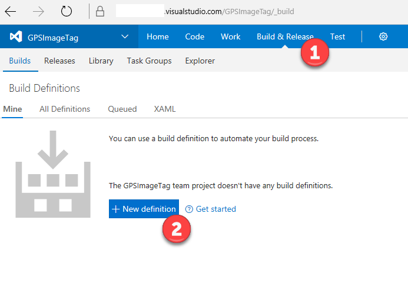
Next, select the Xamarin.Android build template (1). Click on the ‘Next’ button (2).
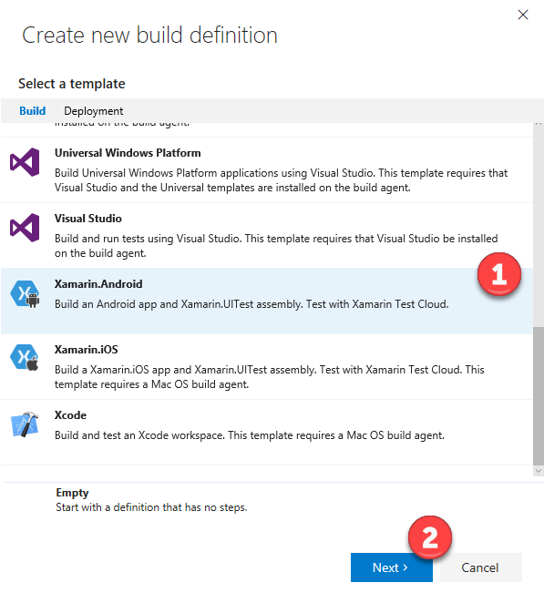
Next enable the option ‘Continuous Integration’ (1). Then click on the ‘Create’ button (2).
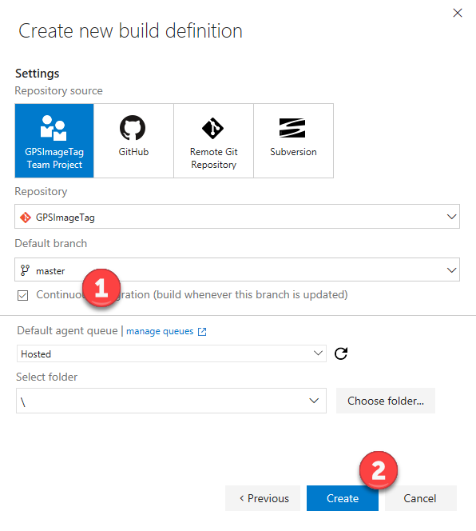
If you want to demonstrate Xamarin Test Cloud. We will need to enter in our Xamarin account credentials. Click on the Variables url option (1). Enter two new variables ‘XamarinPassword’ and ‘XamarinEmail’ (2). Fill in the appropriate password and email address (3). To hide the values, click on the lock icon next to the fields. Click on the ‘Save’ button (4).
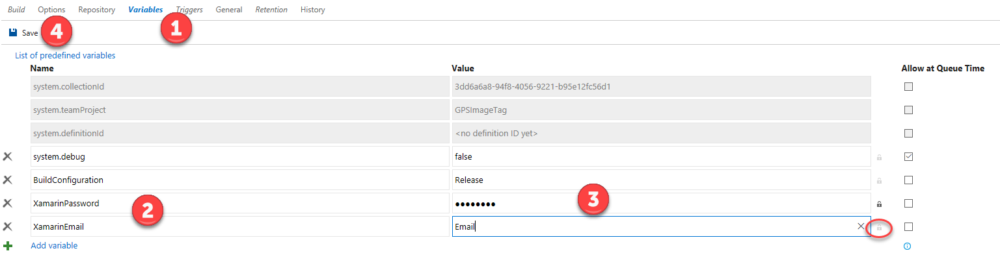
The save dialog will appear. Enter the name ‘GPSImageTag Android Build’ and click ‘OK’ button (2).
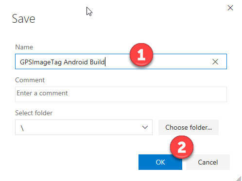
Next, we need to update the Build Xamarin.Android Project build step. Select this step to continue (1).
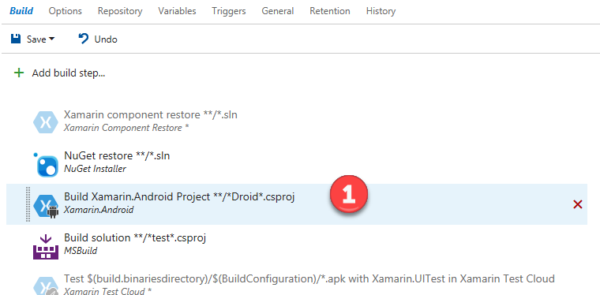
In the settings for the Build Xamarin.Android Project step, we need to set the MSBuild Version to MSBuild 15.0 (preview) (1). Next we need to update the JDK version to JDK 8 (2).
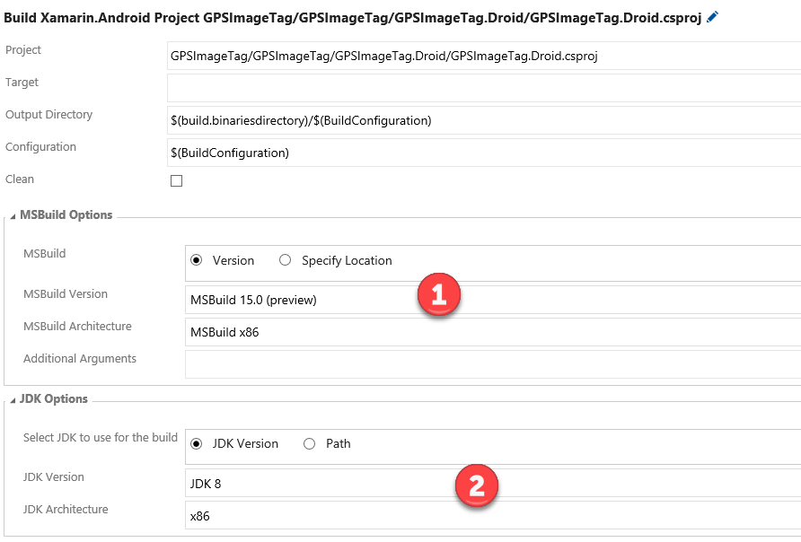
We need to create another Variable for the next build step. Click on the Variables (1). Next enter the Variable ‘KeyStorePassword’ (2). Next enter the password you used during the KeyStore creation as the value and click on the lock icon next to the field (3). Last step is to click the Save (4).
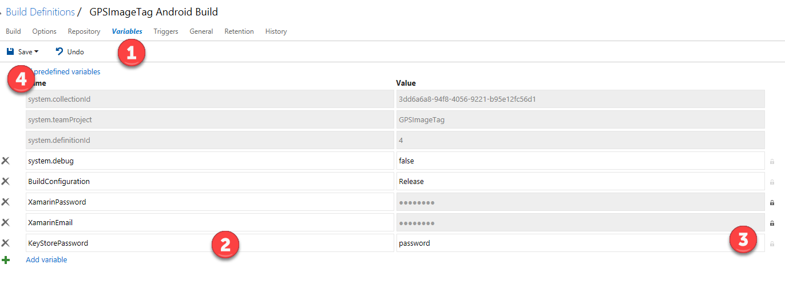
On the Build Solution step for the test project (1). We need make sure to set the Project to point to the *.csproj file for our test project (2). Make sure to enable this step for the initial setup Build run (3).
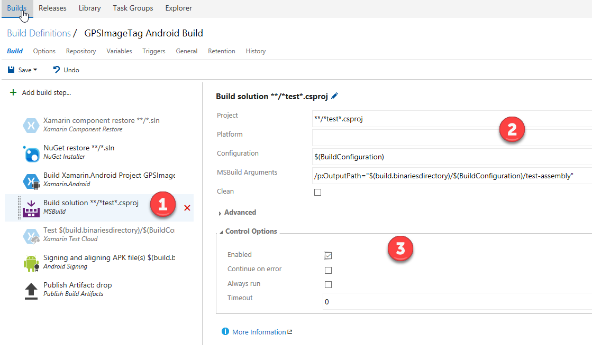
Do not do the Xamarin Test Cloud steps if you didn’t setup a Xamarin Test Cloud account.
(Xamarin Test Cloud step) We need to go and log into the Xamarin Test Cloud https://testcloud.xamarin.com. Within the Account Settings click on the Teams & Apps (1). Next click on the show API key (2). We will need to copy the Team API Key for the Xamarin Test Cloud Build step (3).
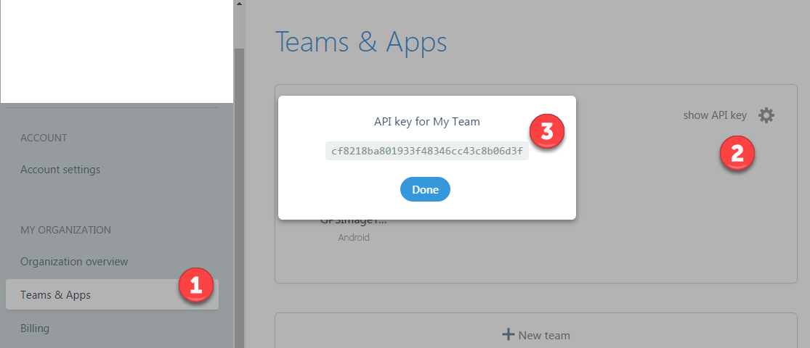
(Xamarin Test Cloud step) Next we need to get the Devices setting for the Xamarin Test Cloud Build step. In Xamarin Test Cloud click on the New Test Run button (1).
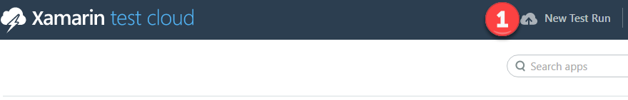
(Xamarin Test Cloud step) Select the GPSImageTag.Droid Team project (1) and click on the Next button (2).
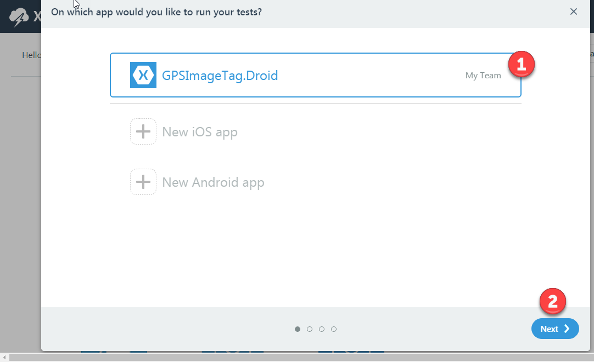
(Xamarin Test Cloud step) Click on the Availability option (1) this will show the devices currently available. Select Phone as the Form Factor (2). Select up to 5 devices (3). Finally click on the Select 7 devices button (4).
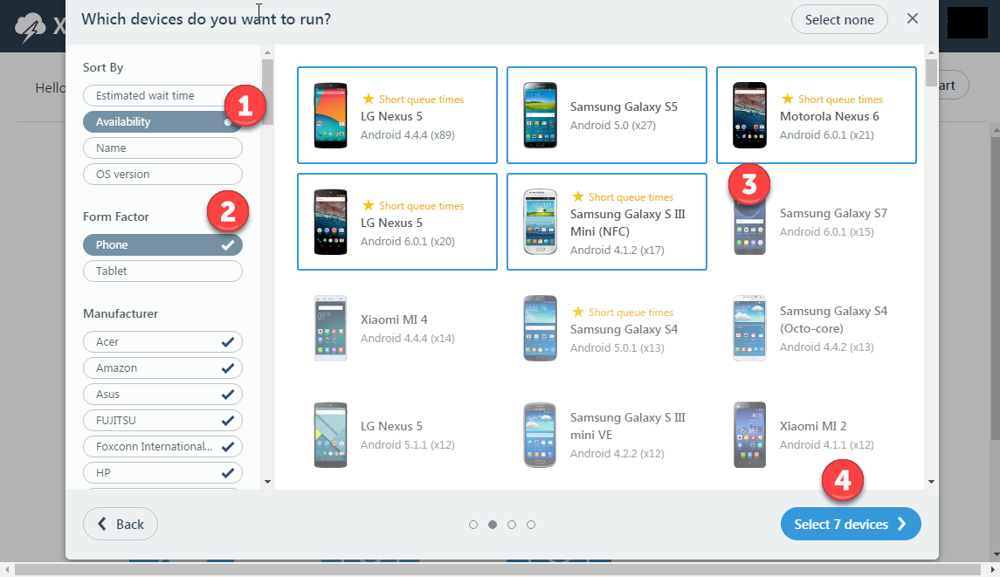
(Xamarin Test Cloud step) Click on the Next button (1).
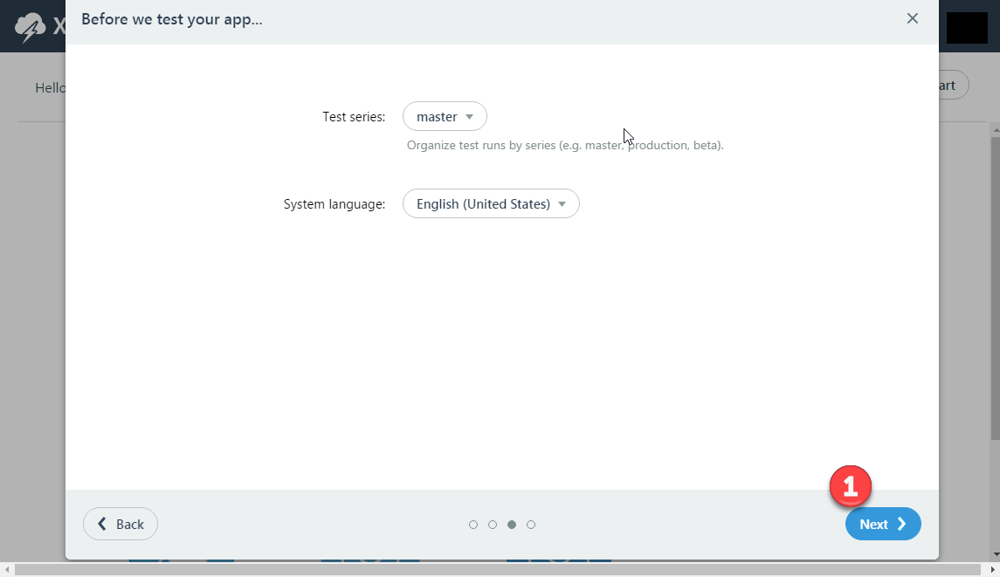
(Xamarin Test Cloud step) The Devices setting can be found after the parameter –devices (1). This is the value we need for the Xamarin Test Cloud build step. We done need to run the tests so we can close the panel (2).
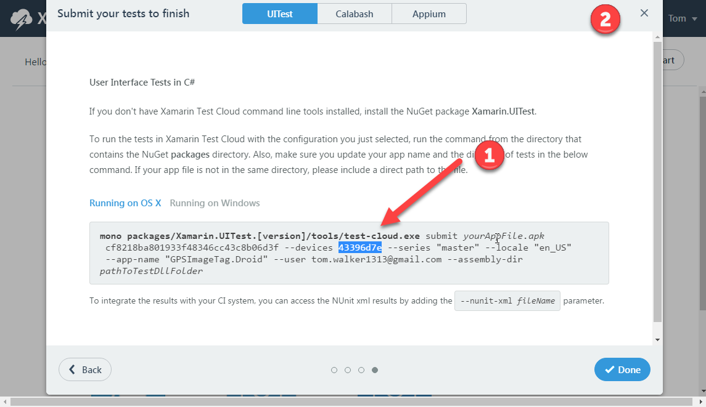
(Xamarin Test Cloud step) For the Xamarin Test Cloud step (1). We need to set a few settings here (2). We need to set the App File to the ($(build.binariesdirectory)/$(BuildConfiguration)\*.apk) *.apk that will be built by the build steps. Team API Key is pulled from the Xamarin Test Cloud Account profile section. The User Email setting is the email address of the registered Xamarin Test Cloud user. Devices is copied from the Xamarin Test Cloud prompt from setting up a Test run in the previous step. The Test Assembly Directory needs to set as shown below ($(build.binariesdirectory)/$(BuildConfiguration)/test-assembly), to the build folder from the Build Solution step for the Test project. Finally, we need to enable this step for the initial setup Build run (3).
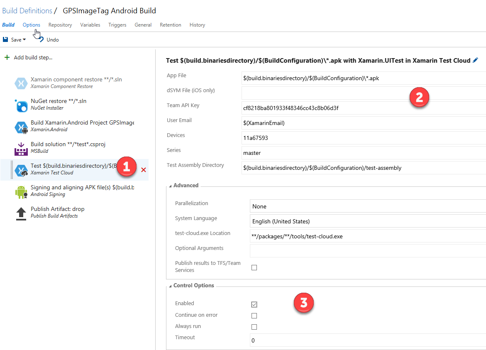
Select the Signing and aligning APK build step (1).
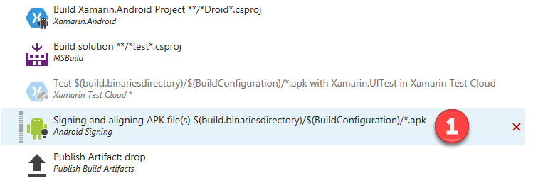
Enable the Sign the APK option (1). Enter the credentials used to define the KeyStore file creation (2). Note we are using the KeyStore variable.
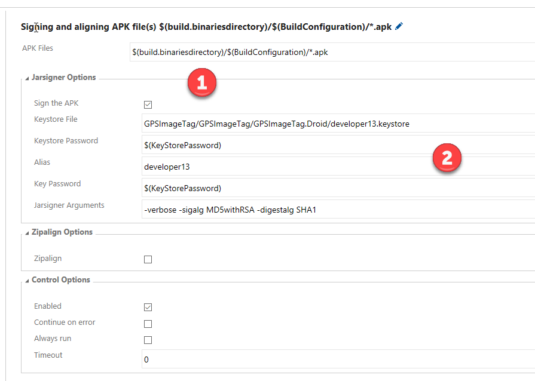
Go to HockeyApp to register for a new account. https://hockeyapp.net/
Click on the ‘Get Started For Free’ (1).
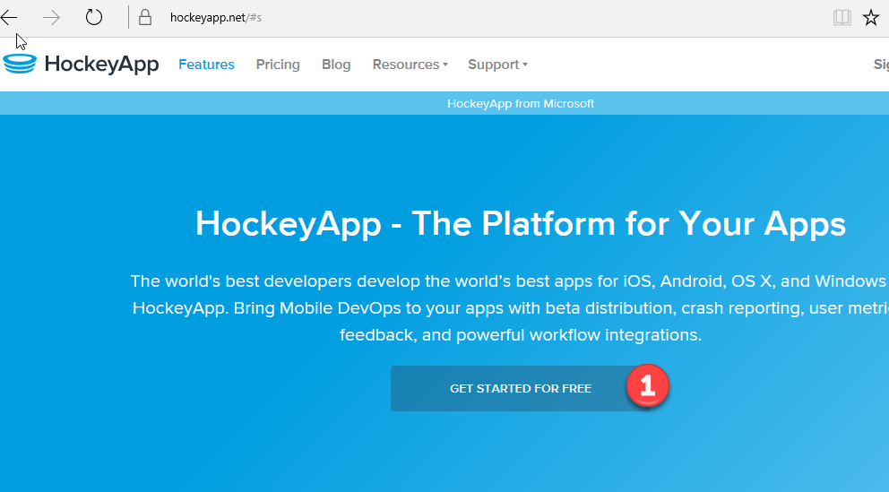
Click on the ‘New App’ button (1).
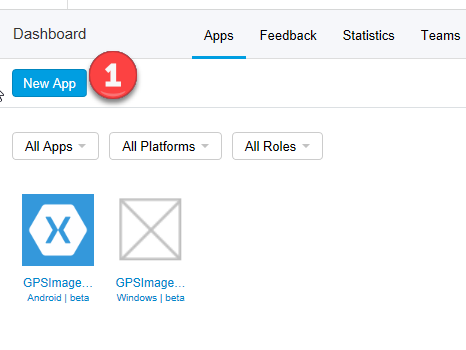
Click on the manually url (1)
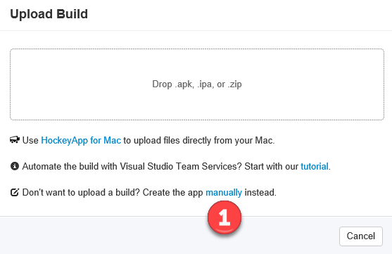
Set the Platform to Android (1). Enter GPSImageTag for the Title (2). Enter GPsImageTag.Droid for Package Name (3). Click Save button (4).
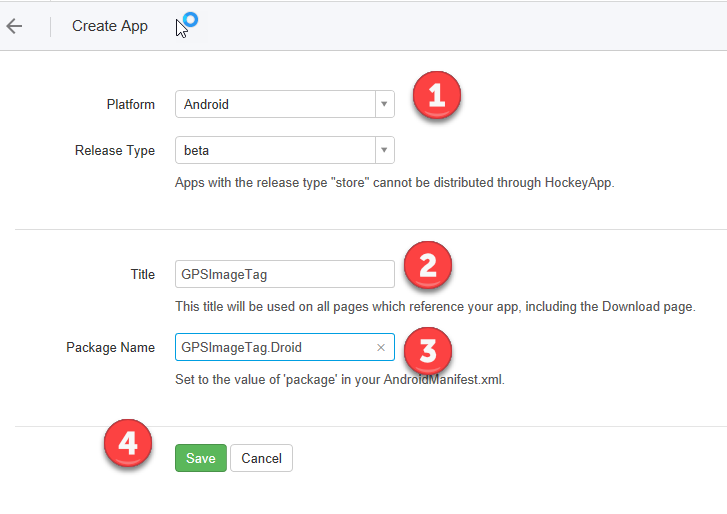
We need to go back to the VSTS portal. Click on the VSTS MarketPlace icon (1)>
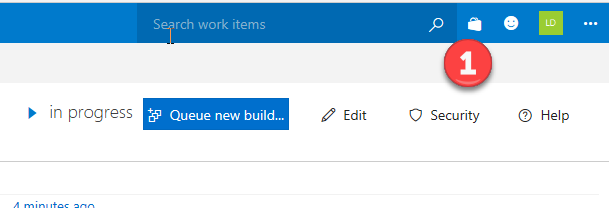
Enter the search term ‘HockeyApp’ and press enter (1). In the results, click on the HockeyApp (2).
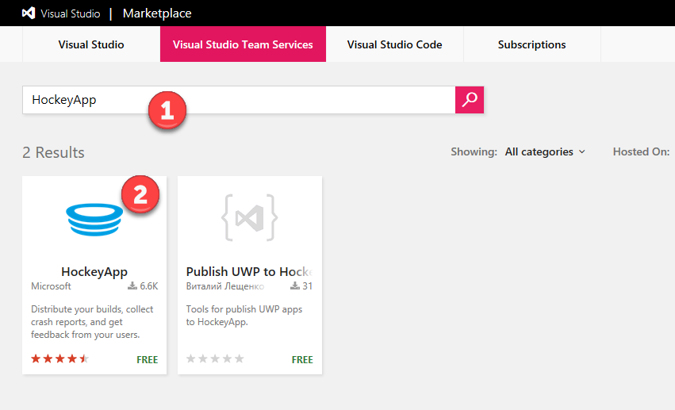
Click on the Install button (1).
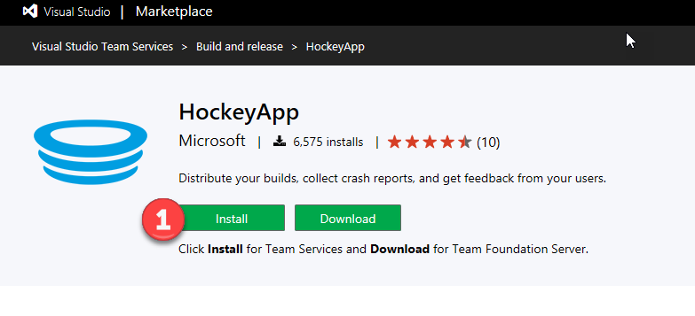
Click on Confirm to continue (1).
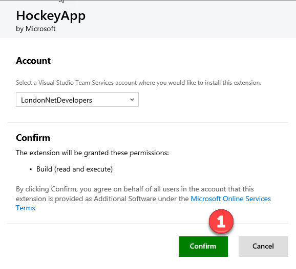
Click on the Close button (1).
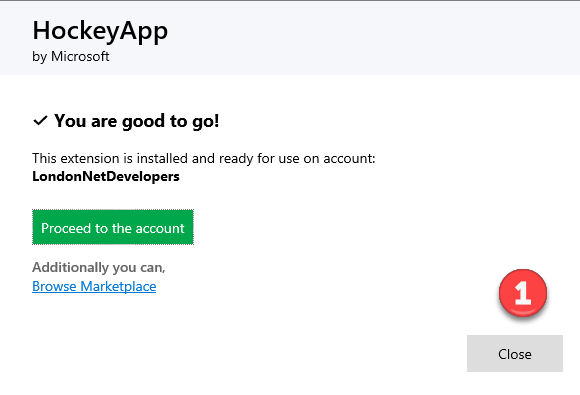
Click on Releases (1).
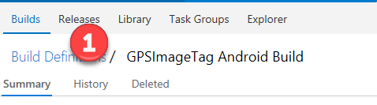
Click on the ‘New definition’ button (1).
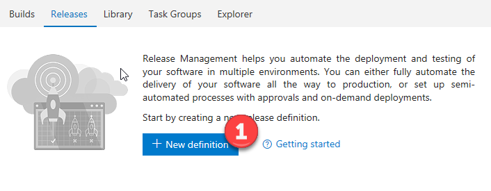
Click on the Empty template (1). Click on the Next button (2).
Enable the option Continuous deployment (1). Click on the Create button (2).
Click on the Add tasks option (1).
Click on the Deploy group (1). Locate the HockeyApp task and click the Add button (2). Finally click the close button (3).
Click on the Add option (1).
Log into your HockeyApp account in a different browser tab. Under the profile menu option click on the Account Settings (1).
In Account Settings, click on the API Tokens (1). Copy the HockeyApp API Token (2).
Back in the VSTS portal, copy the API Token copied from HockeyApp (1). Click the OK button to continue (2)>
Log back into HockeyApp, click on the GPSImageTag Android App definition (1).
Copy the App ID we will need to complete the HockeyApp publish task in the release definition.
Back in the release definition we need to complete the HockeyApp publish task. Set the HocekyApp Connection to HockeyApp (1). Paste in the HockeyApp AppID (2). Click on the ellipse button and set the path to the *.apk file found in the drop folder, as shown below (3).
Next we need to use the same HockeyApp ID to register the Hockey SDK within our Android application. In the GSPImageTag.Droid project in the MainActivity.cs file (2). Set the HockeyAppId to the one from the HockeyApp portal (2).
If you did setup Xamarin Test Cloud account, run a build prior to the demo to get the test cloud results.
In VSTS portal, select Build & Release (1), then click on the Queued tab. Next, click on the Queue build (3)
In the pop up dialog window, click on the OK button (1).
Disable Build Unit Test and the Xamarin Test Cloud steps in build definition. This means unchecking the enabled checkbox in these build steps and clicking save.
Go to VSTS and show that the code is in a Git repository. Click on the Code menu option in VSTS (1).
Point out Work tab, under which you can do all kinds of agile project management work item tracking methodologies.
Go to Build & Release
On the GPSImageTag Android Build definition select the ellipse button (1). Next, click on the Queue new build option (2). Explain we are running a new build and will come back to it in the final demo.
It will display a monitoring page. This will continue on while the session continues. We'll come back to it in demo 3.6
Back to Build & Release
Show start of Add New Build sequence and what initial out-of-box steps look like. Click on the New button (1).
Cancel out of that and select edit for the one we built by clicking on the ellipse button (1) and then click on Edit option (2).
This is to build for the Xamarin Forms Android head'
Show Repository tab to see where code is coming from for the build definition. Click on the Repository link (1). We can see that the Repository is mapped to the GPSImageTag master branch.
Back to Build tab and Explain steps.
Click on the Variables link (1). Point out password protection. These are the variables we defined to be used for the Xamarin Test Cloud step (2).
Explain that for the NuGet restore step (1), we need to make sure to set the NuGet Version to 3.5 build (rc2) (2).
For the Build Xamarin.Android step we need to make sure to set the MSBuild to MSBuild 15 (preview) (2). Plus, the JDK needs to be set to JDK 8 (3).
Point out disabled Test Cloud. This is where the build process would publish the tests to Xamarin Test Cloud to be run.
On the Signing and aligning step (1) we set it up to sign the *.apk with the KeyStore certification (2). This is necessary for publishing to HockeyApp.
The next step is the Publish Artifact:drop (1). This step copies the built *.apk file to the drop folder on the VSTS server (2)
Go into Triggers (1). Explain how Continuous Integration can be configured to build every time code is checked in (2).
Go to Releases (1). A Release is like a versioned publication of the software into which we can publish one or more builds (2).
Show how New Release is created without completing the whole thing. Click on the Plus button and select ‘Create release definition’ option (1).
Select the Empty template (1) and click on the ‘Next’ button (2).
In the next step click on the Cancel button (1).
We can have multiple environments for example QA. Dev, Staging, Production. We can add these by clicking on the Add environment button (1) to add in the required deployments.
On the Triggers tab (1). We can setup continuous deployment option. Here we have defined that after each Build run we want to run this Release (2).
Open existing Release definition. The one release step we have is that after a successful Build we want to deploy the *.apk to HockeyApp (1).
Here we have the HockeyApp registration to allow for the Release to publish the Android *.apk file to our HockeyApp portal
Hockey app allows us to publish apps to testers, track crashes in production apps, and monitor app usage'
Go to the HockeyApp portal. We use the AppID in the Release HockeyApp step to identify the correct app (1). Here we have the list of Android app versions published (2). We can also see Crash and registered Events from the app (3).
Custom Events are events we register in our code to capture when a button or feature is used within our application.
Under the Code tab, click Files and expand down to MainActivity.cs under GPSImageTag.Droid. We can see that we are using the HockeyApp Id (1). We next need to register the app with HockeyApp (2). This allows for the Crashes to be captured and sent to HockeyApp portal when we next run the application. We can also register custom events to capture the use of features within our application (3).
Click on Build/Releases tab then Releases and edit the release definition.
Another feature we can enable on the HockeyApp step is to enable the option to Notify Users (1). When a new version of the app is published to HockeyApp. This steps uses the list of registered team members to the HockeyApp project and sends each one an email update.
We covered a lot of DevOps features. We will return back to see the results of the Build process in Demo 3.6.